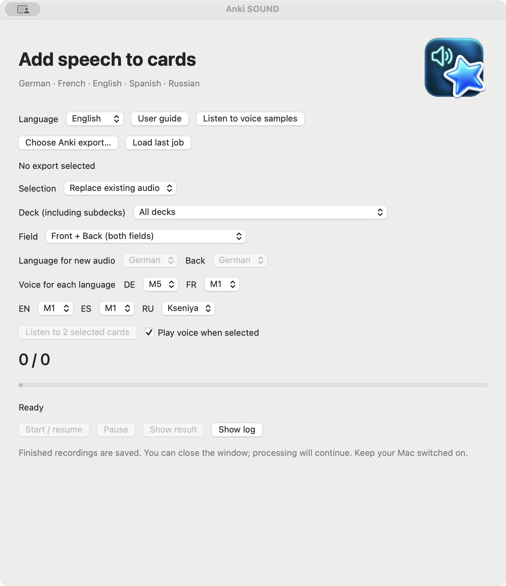

USER GUIDE · VERSION 3.4.11
Anki SOUND
A macOS tool that adds local speech to selected Anki cards and produces a separately verified export. Progress is saved; pausing finishes the current recording first.


Project description
Anki SOUND combines a native macOS interface with resumable local speech processing. It focuses on explicit selection, preservation of learning data, atomic file publication, Anki package verification and keyboard-accessible controls. This release is a local prototype, not an Anki add-on or a publicly notarized distribution.
Installation
Requirements: Apple Silicon Mac, macOS 13 or later, and Python 3.9–3.12. Tested on macOS 15.7 / Python 3.9.6. This package includes the app, source code, configuration and guides. Python, dependencies and voice models are NOT bundled. Extract the complete folder to a writable location. If Python is missing, install a supported version from python.org. Run SETUP.command (internet required), then open previews/Anki SOUND.app. Keep the app and project folder together; rerun SETUP.command after moving the folder. The app is locally signed, not notarized. If macOS blocks it, verify its origin and checksum and use System Settings → Privacy & Security to allow this app. Do not disable global security settings.
How it works
Read export → select eligible fields → clean HTML for speech → normalize numbers → synthesize locally → preserve full WAV audio → verify and publish export. Anki SOUND changes note fields only at explicitly selected sound references. The input file stays unchanged. German uses M5; French, English and Spanish use M1; Russian uses Kseniya. The interface is available in German, English and Russian; speech language is selected separately.
Voices and tags
Each language has its own current voice: DE M5, FR M1, EN M1, ES M1 and RU Kseniya. Change it in its pop-up list; the choice is saved with a new job. In “Cards with a tag” mode, enter a separate tag name for DE, FR, EN, ES and RU. For example, fr-audio selects a French Front field, while de-audio selects a German Back field in a French deck. Tags are matched exactly: soundish is not sound.
Three selection modes
1. Replace existing audio: First add audio in Anki using your preferred recording method, add-on or audio file. Anki SOUND replaces existing [sound:…] references; it does not add audio to previously unsounded fields. Optional deck and field filters are available. Recognized deck roots: Deutsch, German, Немецкий, !Немецкий (Front → German), Französisch, French, Французский (Front → French, Back → German).
2. Cards with a tag: enter one exact tag name for each language. On a recognized deck, the deck and field determine the language; its matching tag must be present. Example: in a French deck, `fr-audio` selects French Front and `de-audio` selects German Back. For an unrecognized deck, exactly one configured language tag can infer the language for Front only: `custom-de` selects German. `custom-de` plus `custom-en` is ambiguous and skipped. Untagged notes and an unrecognized Back are skipped; use Selected deck to choose the language explicitly. Tags must match exact tokens. Deck and field filters are optional.
3. Selected deck: Choose the deck directly from the list read from the export. Subdecks are included. No tag is required. Only selected fields receive speech.
Fields: The list contains actual field names from the export. Front + Back processes both fields with these names; select their languages separately. A field is not necessarily the visible card side: reversed templates may display fields differently. Notes also belonging to decks outside the selected deck are excluded. User deck and field names are never translated. Coloured card flags are not used.
Workflow
Create a fresh export in Anki using the current format, preferably including media and scheduling. Select the file, mode and, where applicable, deck, field and speech language. Start processing. Pause takes effect after the current recording. When finished, use Show result. Keep a fresh backup before importing. For APKG updates of existing notes, choose Always update notes: note timestamps remain unchanged in the export. Do not blindly import older scheduling over your current learning history. Test the import in a separate profile first. Verification covers the output package, not arbitrary import settings.
Limits and privacy
Only explicitly selected content is processed. Empty fields and unresolved numbers are skipped. Cyrillic is accepted for Russian speech; for other languages it requires review; multiple audio references in one field require manual review. Output includes new audio and media present in the input. Missing original media is not reconstructed. Technical tail checks detect certain truncation risks but do not guarantee every word is pronounced correctly. Listen to samples before a large import. Card text and recordings stay local; only setup downloads public packages and models. Output folders contain private card text and must stay out of a portfolio. A second writer is blocked; closing the window does not stop processing. Idle sleep is prevented while processing, provided the Mac remains powered on with its lid open.
Russian speech and samples
Russian is available in all three modes. Voices: Kseniya (initial setting), Xenia and Baya are female; Aidar and Eugene are male. Russian voice selection is independent of the other languages. Deck roots Русский / Русский язык / Russian / Russisch identify a Russian Front field. For other decks or the reverse field, use Selected deck and explicitly select Russian. RU has its own Tag name in tag mode; a tag alone does not determine the language.
Listen to voices opens the combined list: 40 existing samples and 5 Russian samples, with page language switching. After a fresh installation, run SAMPLES.command to create these local examples.
Setup additionally downloads dependencies and a Russian model of about 139 MB, verified with SHA-256. The model is not bundled. Model terms, including its noncommercial license, are listed in Third-party components and voice models. Russian numbers, times and DD.MM.YYYY dates are spelled out before synthesis. Spell foreign words and unsupported symbols using Russian letters; otherwise the field is skipped for review. Long texts are split and joined with pauses. Original card text is preserved.
Listening before processing
When enabled, Play voice when selected immediately plays a short ready-made sample in a separate small window after a voice change. Disable it or close that window to stop the sound at once. Listen to 2 selected cards takes up to two eligible cards using the current mode, deck, field and tags, creates temporary WAV files and plays them in the same separate window. It does not change the export or the queue. Changing mode, deck, field, tag or voice also stops listening. Closing the main window quits the app when no background job is active; an active speech job continues as before.